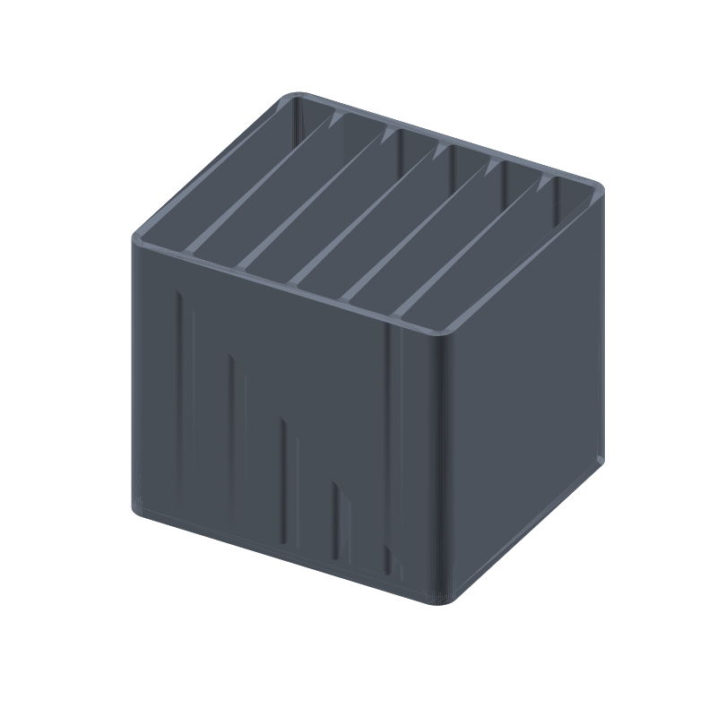

Seed packet box STL, six 14 mm slots, 105 × 95 × 90 mm
Loose seed packets slump, tear, and hide the variety you want at the bottom of a drawer. This box stands six of them on edge in 14 mm slots, one packet per slot, labels facing out. A full height 100 mm packet stands 13 mm above the rim, so you can pull it out by the top; packets shorter than the 87 mm slot sit lower, and shallow ones need two fingers down the slot to fish them out.
Walls and floor are a plain 3 mm everywhere: the five dividers, the two end walls, 6 mm rounded outer corners and 2 mm rounded slot corners, nothing that needs support. The whole thing prints open top on a flat plate, vertical walls only, no overhangs, no bridges.
This page carries the measured spec sheet: dimensions taken from the exported mesh, every edge counted, the volume cross checked against an analytic sum, and preview renders, so you can check the numbers before you slice.

The STL is one material and prints in one color; the renders shade the walls by light angle so the slots and rounded corners read as geometry, not paint.
Spec sheet, measured from the mesh
| Spec | Value |
|---|---|
| As exported | One connected open-top box 105 × 95 × 90 mm, 6 mm rounded outer corners, 2 mm rounded slot corners |
| Slots | Six vertical slots 14.0 mm wide, one per packet: spans x 3 to 17, 20 to 34, 37 to 51, 54 to 68, 71 to 85, 88 to 102 (ray measured to 0.001 mm) |
| Slot channel | 89.0 mm deep front to back (95 minus 2 × 3 mm walls), 87.0 mm below the rim (90 minus 3 mm floor) |
| Fit | Paper seed packets up to about 13 mm thick stand on edge; a 100 mm packet stands 13 mm above the rim for grip |
| Walls | 3 mm everywhere: five dividers, two end walls, front and back, all ray measured at 3.0 mm |
| Floor | 3 mm solid under all six slots (ray verified at z 1.5) |
| Volume | 246.34 cm³ mesh vs 246343.30 mm³ analytic, delta 0.0000002%, ≈ 305 g PLA solid, less at typical infill |
| Flat on one plate, open top, vertical walls only, no overhangs, no bridges, no supports; about 10 to 12 h at 0.2 mm layers (geometry estimate) | |
| Mesh check | Watertight, winding consistent, euler 2, genus 0, one body, 2222 faces, 1113 vertices, all 3333 edges shared by exactly 2 faces (trimesh 5.1.0, 2026-09-10) |
| Files | STL (109 KB) and 3MF (24 KB) plus the parametric generator script gen_seedbox14.py |
| Params | w 105, d 95, h 90, wall 3, floor_t 3, corner_r 6, slot_r 2, slot_w 14, n_slots 6, div 3 |
| License | CC-BY 4.0 on MakerWorld; royalty free, no AI training, direct from us |
How the box was verified
The generator extrudes the wall plan (outer profile with the six slot holes) full height, extrudes the floor slab, and unions the two with a manifold engine before anything is written. Parts that merely touch, coplanar and unwelded, fall apart into separate bodies the moment the file is reloaded, so the script asserts watertight, winding consistent, one body, and the right section loops before export: 1 loop at floor height, 1 plus the 6 slots at mid height.
The shipped STL loads back with merged vertices as watertight, winding consistent, euler 2, genus 0, one body, is_volume true. The edge census counts 3333 edges and every one of them is shared by exactly 2 faces: zero non-manifold edges anywhere in the mesh.
The features were ray scanned on the reloaded mesh. Casting down from above the slot midline and bisecting every edge transition to 0.001 mm gives six openings exactly 14.0 mm wide at x 3 to 17 through 88 to 102, and seven walls, dividers and end walls alike, exactly 3.0 mm. From the rim, the six slot floors sit 87.0 mm down, the channels run 89.0 mm front to back, and a point probe at z 1.5 lands inside the solid under all six slots: the floor is continuous, not a false bottom.
The volume cross checks two ways. Trimesh measures 246343.30 mm³ on the mesh. An independent sum from the 2D source polygons, outer footprint 9943.92 mm² times 90 mm, minus the six slot footprints 7455.28 mm² times 87 mm, comes to 246343.30 mm³. The two agree to 0.0000002%, far inside the 1% gate.
Print notes
Print the file as exported, flat on the plate: open top, vertical walls, no overhangs, so the slicer needs no supports and no brim beyond plate adhesion. 0.2 mm layers and three perimeters are a reasonable default; the walls are 3 mm, so three perimeters fill them without infill walls.
I have not test-printed this yet. If you print it, tell me how your tallest packet sits. The knobs are in the generator: w, d, h, wall, floor_t, corner_r, slot_r, slot_w, n_slots and div.
Change any of those and rerun gen_seedbox14.py: slot positions, walls and floor recompute from the parameters, and the script refuses to write an STL if the slots would not fit the inner width, if a slot comes out too small for a packet, or if the reload fails the one body, watertight, euler 2 checks. A bigger box or a ninth slot is a number change, not a redesign.
Honest limits
The 10 to 12 hour print figure is a geometry estimate scaled from the smaller organizers in this pool, not a timed print, and the box is mesh verified but untested on a printer. The first thing to check on a real print is how your thickest packet stands in the 14 mm slot: paper packets run about 10 to 13 mm thick, and a fat corn or onion packet may want slot_w bumped a millimeter.
Packets shorter than the 87 mm slot sit below the rim, and the shallowest ones take two fingers to fish out. If that annoys you, cut h, but keep enough height that your tallest packet still stands 13 mm proud of the rim for grip.
PLA is fine for a windowsill seed shelf, but a hot shed, a greenhouse or a car trunk can creep it. For storage that rides in a warm garage, print the same generator output in PETG.
Where to get the files
The seed packet box is staged on our MakerWorld account and goes public on our profile once it is submitted and clears review.
More printed organizers and bench tools, with a status table for the pool: 3D printed desk organizers and printable tools. The rebuild-everything approach, generator parameters per model side by side: parametric 3D printed tools.
Compare all 20 models by solid mesh volume in the STL volume ledger.
FAQ
Will my seed packets fit?
The slots are 14 mm wide and the channels run 89 mm front to back, 87 mm below the rim. Standard paper vegetable and flower packets, about 10 to 13 mm thick, stand on edge with room to slide; a 100 mm tall packet stands 13 mm above the rim so you can grab the top. If your seed company prints thicker packets, raise slot_w in the generator and rerun.
Does it print without supports?
Yes. The box is open top and every surface is either flat on the plate or a vertical wall: no overhangs, no bridges, nothing floating. The floor is a 3 mm slab on the plate and the ray scan confirmed it is solid under all six slots, so packets sit on printed plastic the whole way down.
Can I change the slot count or the size?
Yes. Edit the parameters in gen_seedbox14.py and rerun it: outer size (w, d, h), thickness (wall, floor_t), radii (corner_r, slot_r) and the slots (slot_w, n_slots, div). The script checks that the slots fit the inner width, asserts one body, watertight and euler 2 on the rebuilt mesh, and writes a new STL with the same guarantees as this one.